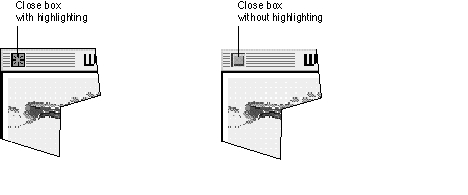
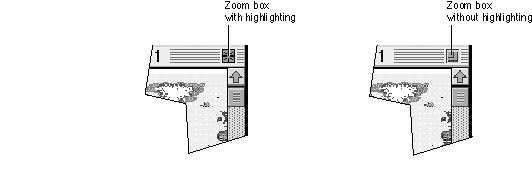
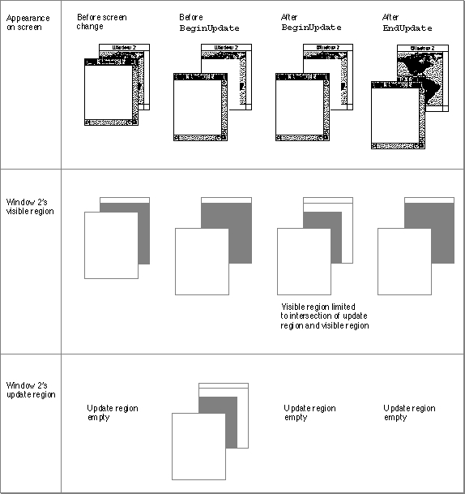

Handling Events in Windows
Your application must be prepared to handle two kinds of window-related events:In System 7 your application receives mouse-down events if it is the foreground process and the user clicks in the menu bar, a window belonging to your application, or a window belonging to a desk accessory that was launched in your application's partition. (If the user clicks in a window belonging to another application, the Event Manager sends your application a suspend event and performs a major switch to the other application--unless the frontmost window is an alert box or a modal dialog box, in which case the Dialog Manager merely sounds the system alert, and the Process Manager retains your application as the foreground process.) When it receives a mouse-down event, your application first calls the
- mouse and keyboard events in your application's windows, which are reported by the Event Manager in direct response to user actions
- activate and update events, which are generated by the Window Manager and the Event Manager as an indirect result of user actions
FindWindowfunction to map the cursor location to a window region, and then it branches to one of its own routines, as described in the next section, "Handling Mouse Events in Windows."The Event Manager sends your application an update event when changes on the desktop or in a window require that part or all of a window's content region be updated. The Window Manager and your application can both trigger update events by adding regions that need updating to the update region, as described in the section "Handling Update Events" beginning on page 4-42.
Your application receives activate events when an inactive window becomes active or an active window becomes inactive. Activate events are an example of the close cooperation between your application and the Window Manager. When you receive a mouse-down event in one of your application's inactive windows, you can call the
SelectWindowprocedure, which removes the highlighting from the previously active window and adds highlighting to the newly active window. It also generates two activate events: one telling your application to deactivate the previously active window and one to activate the newly active window. Your application then activates and deactivates the content regions, as described in the section "Handling Activate Events" beginning on page 4-44.When the user first clicks in an inactive window, most applications do not make a selection or otherwise change the window or document, beyond making the window active. When your application receives a resume event because the user clicked in one of its windows, you might not even want to receive the mouse-down event that caused your application to become the foreground process. You control whether or not you receive this event through the
'SIZE'resource, described in the chapter "Event Manager" earlier in this book.Handling Mouse Events in Windows
When your application is active, it receives notice of all keyboard activity and mouse-down events in the menu bar, in one of its windows, or in any windows belonging to desk accessories that were launched in its partition.When it receives a mouse-down event, your application calls the
FindWindowfunction to map the cursor location to a window region.The function specifies the region by returning one of these constants:
CONST inDesk = 0; {none of the following} inMenuBar = 1; {in menu bar} inSysWindow = 2; {in desk accessory window} inContent = 3; {anywhere in content region except size } { box if window is active, } { anywhere including size box if window } { is inactive} inDrag = 4; {in drag (title bar) region} inGrow = 5; {in size box (active window only)} inGoAway = 6; {in close box} inZoomIn = 7; {in zoom box (window in standard state)} inZoomOut = 8; {in zoom box (window in user state)}When the user presses the mouse button while the cursor is in a window,FindWindownot only returns a constant that identifies the window region but also sets a variable parameter that points to the window.In System 7, if
FindWindowreturnsinDesk, the cursor is somewhere other than in the menu bar, one of your windows, or a window created by a desk accessory launched in your application's partition. The function may returninDeskif, for example, the cursor is in the window frame but not in the drag region, close box, or zoom box.FindWindowseldom returns the valueinDesk, and you can generally ignore the rare instances of this function result.If the user presses the mouse button with the cursor in the menu bar (
inMenuBar),
you call your own routines for displaying menus and allowing the user to choose
menu items.The
FindWindowfunction returns the valueinSysWindowonly when the user presses the mouse button with the cursor in a window that belongs to a desk accessory launched in your application's partition. You can then call theSystemClickprocedure, passing it the event record and window pointer. TheSystemClickprocedure, documented in the chapter "Event Manager" in this book, makes sure that the event is handled by the appropriate desk accessory.The
FindWindowfunction returns one of the other values when the user presses
the mouse button while the cursor is in one of your application's windows. Your response depends on whether the cursor is in the active window and, if not, what
kind of window is active.When you receive a mouse-down event in the active window, you route the event to the appropriate routine for changing the window display or the document contents. When the user presses the mouse button while the cursor is in the zoom box, for example, you call the Window Manager function
TrackBoxto highlight the zoom box and track the mouse until the button is released.When you receive a mouse-down event in an inactive window, your response depends on what kind of window is active:
Listing 4-9 illustrates an application-defined procedure that handles mouse-down events.
- If the active window is a movable modal dialog box, you should sound the system alert and take no other action. (If the active window is a modal dialog box handled by the
ModalDialogprocedure, the Dialog Manager doesn't pass the event to your application but sounds the system alert itself.)- If the active window is a document window or a modeless dialog box, you can call
SelectWindow, passing it the window pointer. TheSelectWindowprocedure removes highlighting from the previously active window, brings the newly activated window to the front, highlights it, and generates the activate and update events necessary to tell all affected applications which windows must be redrawn.Listing 4-9 Handling mouse-down events
PROCEDURE DoMouseDown (event: EventRecord); VAR part: Integer; thisWindow: WindowPtr; BEGIN part := FindWindow(event.where, thisWindow); {find out where cursor is} CASE part OF inMenuBar: {cursor is in menu bar} BEGIN {make sure menu items are properly enabled/disabled} MyAdjustMenus; {let user choose a menu command} DoMenuCommand(MenuSelect(event.where)); END; inSysWindow: {cursor is in a desk accessory window} SystemClick(event, thisWindow); inContent: {cursor is in the content region of one } { of your application's windows} IF thisWindow <> FrontWindow THEN {cursor is not in front window} BEGIN IF MyIsMovableModal(FrontWindow) THEN {front window is } SysBeep(30) { movable modal} ELSE {front window is not movable modal} SelectWindow(thisWindow); {make thisWindow active} END ELSE {cursor is in content region of active window} DoContentClick(thisWindow, event); {handle event in content region} inDrag: {cursor is in drag area} {if a movable modal is active, ignore click in an inactive title bar} IF (thisWindow <> FrontWindow) AND MyIsMovableModal(FrontWindow) THEN SysBeep(30) ELSE {let Window Manager drag window} DragWindow(thisWindow, event.where, GetGrayRgn^^.rgnBBox); inGrow: {cursor is in size box} DoGrowWindow(thisWindow, event); {change window size} inGoAway: {cursor is in close box} {call TrackGoAway to handle mouse until button is released} IF TrackGoAway(thisWindow, event.where) THEN DoCloseCmd; {handle close window} inZoomIn, inZoomOut: {cursor is in zoom box} {call TrackBox to handle mouse until button is released} IF TrackBox(thisWindow, event.where, part) THEN DoZoomWindow(thisWindow, part); {handle zoom window} END; {end of CASE statement} END; {end of DoMouseDownEvent}TheDoMouseDownprocedure first callsFindWindowto map the location of the cursor to a part of the screen or a region of a window.If the cursor is in the menu bar,
DoMouseDowncalls other application-defined procedures for adjusting and displaying menus and accepting menu choices.If the cursor is in a window created by a desk accessory,
DoMouseDowncalls theSystemClickprocedure, which handles mouse-down events for desk accessories from within applications.If the cursor is in the content area of a window,
DoMouseDownfirst checks to see whether the cursor is in the currently active window by comparing the window pointer returned byFindWindowwith the result returned by the functionFrontWindow. If
the cursor is in an inactive window,DoMouseDownchecks to see if the active window
is a movable modal dialog box. (If the front window is an alert box or a fixed-position modal dialog box, an application does not receive mouse-down events in other windows.) If the active window is a movable modal dialog box and the cursor is in another window,DoMouseDownsimply sounds the system alert and waits for another event. If the active window is not a movable modal dialog box,DoMouseDown
callsSelectWindowto activate the window in which the cursor is located. TheSelectWindowprocedure relayers the windows as necessary, adjusts the highlighting, and sends the application a pair of activate events to deactivate the previously active window and activate the newly active window.DoMouseDownmerely activates
the window in which the cursor is located; it does not make a selection in the newly activated window in response to the first click in that window.If the cursor is in the content area of the active window, the
DoMouseDownprocedure calls another application-defined procedure (DoContentClick) that handles mouse events in the content area.If the cursor is in the drag region of a window,
DoMouseDownfirst checks whether the drag region is in an inactive window while a movable modal dialog box is active. In
that case,DoMouseDownmerely sounds the system alert and waits for another event. In any other case,DoMouseDowncalls the Window Manager procedureDragWindow, which displays an outline of the window, moves the outline as long as the user continues to drag the window, and callsMoveWindowto draw the window in its new location when the user releases the mouse button. After the window is drawn in its new location, it is the active window, whether or not it was active before.If the cursor is in the size box,
DoMouseDowncalls another application-defined routine (DoGrowWindow, shown in Listing 4-13 on page 4-51) that resizes the window.If the mouse press occurs in the close box,
DoMouseDowncalls theTrackGoAwayfunction, which highlights the close box and tracks all mouse activity until the user releases the mouse button. As long as the user holds down the mouse button and leaves the cursor in the close box,TrackGoAwayleaves the close box highlighted, as illustrated in Figure 4-19. If the user moves the cursor out of the close box,TrackGoAwayremoves the highlighting.Figure 4-19 The close box with and without highlighting

When the user releases the mouse button,
TrackGoAwayreturnsTRUEif the
cursor is still in the close box andFALSEif it is not. IfTrackGoAwayreturnsTRUE,DoMouseDowncalls the application-defined procedureDoCloseCmdto close the window. Listing 4-16 on page 4-54 shows theDoCloseCmdprocedure.If the mouse press occurs in the zoom box, the
DoMouseDownprocedure first callsTrackBox, which highlights the zoom box and tracks all mouse activity until the user releases the mouse button. As long as the user holds down the mouse button and leaves the cursor in the zoom box,TrackBoxleaves the zoom box highlighted, as illustrated in Figure 4-20. If the user moves the cursor out of the zoom box,TrackBoxremoves the highlighting.When the user releases the mouse button,
TrackBoxreturnsTRUEif the cursor is still in the zoom box andFALSEif it is not. IfTrackBoxreturnsTRUE,DoMouseDowncalls the application-defined procedureDoZoomWindowto zoom the window. Listing 4-12 on page 4-48 shows theDoZoomWindowprocedure.Figure 4-20 The zoom box with and without highlighting

Handling Keyboard Events in Windows
Whenever your application is the foreground process, it receives key-down events
for all keyboard activity, except for the three standard Command-Shift-number key sequences and any other Command-Shift-number key combinations the user has installed. (Command-Shift-1 and Command-Shift-2 eject disks, and Command-Shift-3 stores a snapshot of the screen in a TeachText document on the startup volume. Your application never receives these key combinations, which are handled by the Event Manager. For more information, see the chapter "Event Manager" in this book.)In general, the active window is the target of keyboard activity.
When the user presses a key or a combination of keys, your application responds by inserting data into the document, changing the display, or taking other actions as defined by your application. To ensure consistent use of and response to keyboard events, follow the guidelines in Macintosh Human Interface Guidelines. Your application should, for example, allow the user to choose frequently used menu items by pressing a keyboard equivalent--usually a combination of the Command key and another key.
When you receive a key-down event, you first check whether the user is holding down
a modifier key (Command, Shift, Control, Caps Lock, and Option, on a standard keyboard) and another key at the same time. If the Command key and a character key are held down simultaneously, for example, you adjust your menus, enabling and disabling items as appropriate, and allow the user to choose the menu item associated with the Command-key combination.Typically, your application provides feedback for standard keystrokes by drawing the character on the screen. It should also recognize arrow keys for moving the cursor within a text display, and it might add support for function keys or other special keys available on nonstandard keyboards.
For an example of an application-defined routine for handling keyboard events, see the chapter "Event Manager" in this book.
Handling Update Events
The Event Manager sends your application an update event when part or all of your window's content region needs to be redrawn. Specifically, the Event Manager checks each window's update region every time your application callsWaitNextEventorEventAvail(orGetNextEvent) and generates an update event for every window whose update region is not empty.The Window Manager typically triggers update events when the moving and relayering of windows on the screen require that one or more windows be redrawn. If the user moves a window that covers part of an inactive window, for example, the Window Manager first calls the window definition function of the inactive window, requesting that it draw the window frame. It then adds the newly exposed area to the window's update region, which triggers an update event asking your application to update the content region. Your application can also trigger update events itself by manipulating the update region.
Your application can receive update events when it is in either the foreground or
the background.The Window Manager ensures that you do not accidentally draw in other windows by clipping all screen drawing to the visible region of a window's graphics port. The visible region is the part of the graphics port that's actually visible on the screen--that is, the part that's not covered by other windows. The Window Manager stores a handle to the visible region in the
visRgnfield of the graphics port data structure, which itself is in the window record.In response to an update event, your application calls the
BeginUpdateprocedure, draws the window's contents, and then calls theEndUpdateprocedure. As illustrated
in Figure 4-21,BeginUpdatelimits the visible region to the intersection of the visible region and the update region. Your application can then update either the visible region or the entire content region--because QuickDraw limits drawing to the visible region, only the parts of the window that actually need updating are drawn. TheBeginUpdateprocedure also clears the update region. After you've updated the window, you callEndUpdateto restore the visible region in the graphics port to the full visible region.See Inside Macintosh: Imaging for more information about graphics ports and
visible regions.Figure 4-21 The effects of
BeginUpdateandEndUpdateon the visible region and
update region
Listing 4-10 illustrates an application-defined procedure,
DoUpdate, that handles
an update event.Listing 4-10 Handling update events
PROCEDURE DoUpdate (window: WindowPtr); VAR windowType: LongInt; BEGIN {determine type of window as defined by this application} windowType := MyGetWindowType(window); CASE windowType OF kMyDocWindow: {document window} BEGIN BeginUpdate(window); MyDrawWindow(window); EndUpdate(window); END; OTHERWISE {alert or dialog box} DoUpdateMyDialog(window); END; {of CASE} END;TheDoUpdateprocedure first determines whether the window being updated is a document window or some other application-defined window by calling the application-defined procedureMyGetWindowType(shown in Listing 4-1 on
page 4-21). If the window is a document window,DoUpdatecallsBeginUpdate
to establish the temporary visible region, calls the application-defined procedureMyDrawWindow(shown in Listing 4-8 on page 4-35) to redraw the content region,
and then callsEndUpdateto restore the visible region.If the window is an alert box or a dialog box,
DoUpdatecalls the application-defined procedureDoUpdateMyDialog, which is not shown here.Handling Activate Events
Your application activates and deactivates windows in response to activate events, which are generated by the Window Manager to inform your application that a window is becoming active or inactive. Each activate event specifies the window to be changed and the direction of the change (that is, whether it is to be activated or deactivated).Your application often triggers activate events itself by calling the
SelectWindowprocedure. When it receives a mouse-down event in an inactive window, for example, your application callsSelectWindow, which brings the selected window to the front, removes the highlighting from the previously active window, and adds highlighting to the selected window. TheSelectWindowprocedure then generates two activate events: the first one tells your application to deactivate the previously active window; the second, to activate the newly active window.When you receive the event for the previously active window, you
When you receive the event for the newly active window, you
- hide the controls and size box
- remove or alter any highlighting of selections in the window
If the newly activated window also needs updating, your application also receives an update event, as described in the previous section, "Handling Update Events."
- draw the controls and size box
- restore the content area as necessary, adding the insertion point in its former location or highlighting any previously highlighted selections
Listing 4-11 illustrates the application-defined procedure
- Note
- A switch to one of your application's windows from a different application is handled through suspend and resume events, not activate events. See the chapter "Event Manager" in this book for a description of how your application can share processing time.
DoActivate, which handles activate events.Listing 4-11 Handling activate events
PROCEDURE DoActivate (window: WindowPtr; activate: Boolean; event: EventRecord); VAR windowType: Integer; myData: MyDocRecHnd; growRect: Rect; BEGIN {determine type of window as defined by this application} windowType := MyGetWindowType(window); CASE windowType OF kMyFindModelessDialogBox: {modeless Find dialog box} DoActivateFindDBox(window, event); {modeless Check Spelling dialog box} kMyCheckSpellingModelessDialogBox: DoActivateCheckSpellDBox(window, event); kMyDocWindow: {document window} BEGIN myData := MyDocRecHnd(GetWRefCon(window)); {get document record} HLock(Handle(myData)); {lock document record} WITH myData^^ DO IF activate THEN {window is becoming active} BEGIN {restore selections and insert caret--if using } { TextEdit, for example, call TEActivate} TEActivate(editRec); MyAdjustMenus; {adjust menus for window} {handle the controls} docVScroll^^.contrlVis := kControlVisible; docHScroll^^.contrlVis := kControlVisible; InvalRect(docVScroll^^.contrlRect); InvalRect(docHScroll^^.contrlRect); growRect := window^.portRect; WITH growRect DO {handle the size box} BEGIN {adjust for the scroll bars} top := bottom - kScrollbarAdjust; left := right - kScrollbarAdjust; END; InvalRect(growRect); END ELSE {window is becoming inactive} BEGIN TEDeactivate(editRec); {call TextEdit to deactivate data} HideControl(docVScroll); {hide the scroll bars} HideControl(docHScroll); DrawGrowIcon(window); {draw the size box} END; HUnLock(Handle(myData)); {unlock document record} END; {of kMyDocWindow statement} END; {of CASE statement} END;TheDoActivateprocedure first determines the general type of the window; that is,
it calls an application-defined function that returns a constant identifying the type
of the window: a Find dialog box, a Check Spelling dialog box, or a document window. Listing 4-1 on page 4-21 shows theMyGetWindowTypefunction.If the target of the activate event is a dialog box window,
DoActivatecalls other application-defined routines for activating and deactivating those dialog boxes. The DoActivateFindDBox and DoActivateCheckSpellDBox routines are not shown here. (TheDoActivateprocedure does not check for alert boxes and modal dialog boxes, because the Dialog Manager'sModalDialogprocedure automatically handles activate events.)If the target is a document window and the activate event specifies that the window is becoming active,
DoActivatehighlights any user selections in the window and draws the insertion point where appropriate. It then makes the controls visible, adds the area occupied by the scroll bars to the update region, and adds the area occupied by the size box to the update region. (Placing window area in the update region guarantees an update event. When the application receives the update event, it calls the application- defined procedureDoUpdateto draw the update region, which in this case includes the size box and scroll bars.)If the target is a document window, and the activate event specifies that the window
is becoming inactive, theDoActivateprocedure calls the TextEdit procedureTEDeactivateto remove highlighting from user selections, calls the Control Manager procedureHideControlto hide the scroll bars, and calls the Window Manager procedureDrawGrowIconto draw the size box and the outline of the scroll bar area.